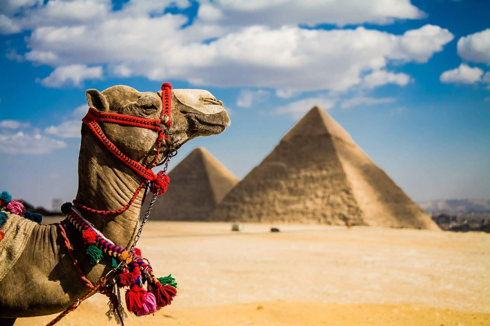

Турагенція OUR TOUR в Чернівцях!
Шановні туристи, раді вітати Вас на сайті турагенції OUR TOUR. У нашій агенції Ви можете забронювати тур онлайн або звернутись за адресою: Чернівці, вул.Ковельська 5. Ми ведемо успішну туристичну діяльність з організації відпочинку по всьому світу понад 10 років. Постійне розширення географії послуг і любов до своєї справи допомогає компанії ставати кращою в туристичній галузі день за днем.
Ми дбаємо про те, щоб відгуки про Нашу роботу залишались завжди позитивними, а Ваш відпочинок приніс Вам незабутню насолоду. Ми стараємось постійно удосконалюватись і бути поруч із сучасними технологіями та тенденціями світового туризму.
У нас ви можете підібрати саме те, що підійде Вам і Вашій родині. Наші спеціалісти підтримують зв'язок зі своїми клієнтами та допомогають у вирішенні всіх питань від моменту вибору туру і аж до приїзду. Ваш відпочинок в надійних руках!
Туреччина
БОДРУМ
Це морський курорт Туреччини, який представляє собою центр нічних розваг країни. А також, це чудове місце для занять серфінгом, дайвінгом і іншими водними видами спорту. З усіх боків Бодрум оточують гори, а найчистіше повітря просочене цитрусовими нотками, що доносяться з мандаринових і апельсинових гаїв, упереміш зі смолистим запахом сосен. .
МАРМАРИС
Розташований на південь від Бодрума на кордоні Егейського і Середземного морів. Він розташувався в мальовничій бухті, в оточенні соснових лісів. Колись давно це було маленьке рибальське містечко. Тепер же це сучасний молодіжний курорт, з великою кількістю відокремлених бухт, з найдовшою набережною, уздовж якої розташувалися різноманітні кафе та ресторани. Треба відзначити, що ресторанчики знаходяться настільки близько до моря, що якщо ви захочете в перервах між прийомом їжі або танцями зануритися в море, це не складе труднощів. .
АНТАЛІЯ
Анталія є головним курортним містом Туреччини. Тут літня погода стоїть в середньому 8 місяців. Якщо ви хочете відпочивати безпосередньо в місті, слід врахувати, що воно має велику кількість дискотек, різних ресторанів і барів, тут же ви можете відвідати східний базар, безліч різних магазинів і, звичайно ж, аквапарк. Але готелі, найчастіше, не мають власного пляжу. Якщо ви плануєте, відпочинок з дітьми, зверніть свою увагу на курортну зону Лара, що неподалік від центру Анталії. Саме там ви зможете спокійно засмагати на піщаних природних пляжах.
КЕМЕР
Цей мальовничий і привабливий курорт Туреччини, навпаки, не приваблює туристів, охочих бродити, розглядаючи пам'ятки. Сюди їдуть насолодитися цілющим смерековим, сосновим повітрям, відпочити на найчистіших галькових пляжах, покуштувати різноманітні страви з морепродуктів. Кемер - ідеальне місце в Туреччині для відпочинку з дітьми. Місцеві готелі потопають в різній зелені, що робить повітря воістину найціннішим для здоров'я, а в більшості готелів робота персоналу поставлена ??таким чином, щоб малюкам було максимально цікаво і комфортно. Окремо варто відзначити місцевий причал, розрахований на сто вісімдесят яхт. .
АЛАНІЯ
Прекрасне, що потопає в зелені, місто з пологими чистими піщаними пляжами. Один з кращих курортів на узбережжі Туреччини для відпочинку з дітьми. Аланія пропонує свої гостям великий вибір розваг, ресторанів з колоритною національною кухнею, прибережних барів, тут ви можете відвідати різні водні атракціони або просто прогулятися в апельсиновому або лимонному саду. Аланія - невеликий курорт, але тут ви можете довгий час бродити по древньому місту, вивчаючи історичні пам'ятники і розглядаючи їх..

СІДЕ
Сіде - різнопланове місто-курорт в Туреччині. Тут знаходяться фешенебельні і бюджетні варіанти готелів з прекрасними піщаними пляжами. Місто дуже древнє, має багату античну історію. Тут збереглося багато пам'яток історії. Сіде славиться гранатовими садами і великими морськими черепахами. Ідеально підходить Сіде як для сімейного, так і для активного відпочинку. .
Болгарія
АЛБЕНА
Албена - один з найкращих болгарських курортів. Її місце розташування дуже вдале для розвитку курортного бізнесу - тут мальовниче узбережжя, екологічно чисті затоки Чорного моря. Пляжна лінія курорту має протяжність 5 км і ширину до 150 м. В Албені налічується близько сорока готелів, серед яких є досить економічні двозіркові і презентабельні чотири зірки. .
ЗОЛОТІ ПІСКИ
Один з найбільших курортів Болгарії. За величиною поступається лише Варні. Берегова лінія 3,5 км, ширина - 100 м. Назву курорт отримав завдяки найчистішим піщанм пляжам. Вхід в море практично по всій лінії пляжу пологий, тому саме в Золоті піски їдуть відпочивати з дітьми. Золоті піски - це не тільки курорт, але і національний парк. Цей факт просто зобов'язує жителів курорту - заповідника берегти його територію в ідеальному порядку. Охороні рідкісних рослин і тварин тут приділяється максимум уваги і коштів. Особливо привертають увагу орхідеї, яких тут кілька десятків видів.
РІВ'ЄРА
Розташований в 18 км від Варни. Його головна визначна пам'ятка - величезний парк з віковими деревами, що зайняв практично всю територію міста. Серед парку і розташувалися найкомфортабельніші готелі Болгарії. Рів'єра відноситься до елітних курортів. Велика кількість мінеральних джерел з цілющою водою дозволяє функціонувати в Рів'єрі оздоровчим центрам і санаторіям. Місто вражає туристів дуже теплою морською водою. Її температура в цьому місці може досягати 48?..
Єгипет
МАКАДІ-БЕЙ
Пляжі Макаді-Бей - це широкі смуги золотистого піску, що плавно переходять в кристально чисте море. Цей райський куточок, оточений горами, є ідеальним місцем для відпочинку в Єгипті. Клімат в цій бухті комфортний в будь-який час року. Літня температура повітря в середньому + 35° С, а взимку - + 20° С. Температура води в будь-який час року не нижче + 20° С. Прибережна смуга поділена між готелями і оснащена всіма необхідними атрибутами пляжного відпочинку (шезлонги, парасольки, водні атракціони і т.д.). Пляжі піщані з домішками ракушок і неймовірно чисті. На території регулярно прибирають не лише сміття, а й осколки коралів. Характерною особливістю є прямий і пологий спуск на всіх пляжах цього єгипетського курорту. Захід в море переважно піщаний. Однак, жителям деяких готелів все ж буде необхідно використовувати спеціальне взуття. .
ШАРМ-ЕЛЬ-ШЕЙХ
На курорті Шарм-Ель-Шейх переважають коралові пляжі. Безпосередньо від берега починається все розмаїття морської живності, яким так славиться Червоне море. Також для пляжів в Шармі характерна невелика ширина. Вони в основному багаторівневі, що надає їм особливу родзинку. Незалежно від того, що спускатися до моря доводиться по сходах, відпочинок в цьому місці Єгипту чудовий. Корали протяжністю в 20, а то і 50 метрів від піщаної смуги - прекрасне видовище, проте значно ускладнюють захід у воду. Готелі, які з'явилися на самому початку забудови курорту, вирубали корали і організували для своїх гостей піщаний спуск в море. Ті, які не встигли зробити того ж, шукають інші способи убезпечити своїх гостей. Від пляжів багатьох готелів вже обладнані понтони, які виходять у відкрите море далеко за межі рифів. Вони дозволяють туристам дійти до глибини не ризикуючи порізатися. Решта ж готелів поки обмежуються видачею спеціального взуття. .
ХУРГАДА
Хургада відноситься до числа найстаріших і найкращих курортів Єгипту, а значить і піщані пляжі тут найрозкішніші і зручно облаштовані. Вони пологі, вкриті найчистішим піском. Тут зручно заходити у воду, вхід не утруднений коралами. Кліматичні умови трохи гірші, ніж на інших курортах Єгипту. Тут холодніше і вітряно, через відсутність гір. При цьому море у Хургаді досить спокійне. Кращі пляжі цього єгипетського курорту розділені на класи. Є кілька розкішних, з розвиненою пляжної інфраструктурою. Є навіть встановлені вітрозахисні екрани поруч з лежаками. Вартість входу на такі пляжі, природно, не дешева. Є і більш бюджетні варіанти, на яких також присутня вся пляжна атрибутика (парасольки, шезлонги) і водні розваги. У Хургаді пляжі розподілені між готелями, проте є міські. Деякі готелі поряд з пляжами володіють і кораловими рифами, що дає їх жителям можливість насолодитися спостереженням за морськими мешканцями. .
Актуальні пропозиції
Раннє бронювання – спеціальна пропозиція від туроператорів, перевізників та готелів. Основна перевага для вас – можливість спланувати відпустку заздалегідь та значно дешевше.
БОЛГАРІЯ, знижки до -50%

ТУРЕЧЧИНА, знижки до -35%
Раннє бронювання Туреччина, вильоти зі Львова та Києва 2022
ГРЕЦІЯ, знижки до -35%
Раннє бронювання Греція, вильоти зі Львова 2022

Єгипет, вересень/жовтень 2022
Раннє бронювання Єгипет, вильоти зі Львова та Києва 2022

Відповіді на найпоширеніші запитання
Як замовити тур?
• Щоб заощадити Ваш час, замовлення наших турів здійснюється через сайт, телефоном, on-line на сайті та безпосередньо в офісі. • Тому, практично немає значення, де ви перебуваєте – наші тури можна замовити всюди. • Необхідні документи для отримання візи ми приймаємо в офісі особисто або Ви можете надіслати зручним для Вас способом на нашу адресу. • Оплату за тур здійснити можна в офісі, на рахунок та через сайт.
У мене немає візи. За скільки потрібно зібрати документи для неї?
Документи на візу можна подавати не раніше, ніж за 90 днів та не пізніше, ніж 15 днів до початку туру; * Зверніть увагу! Подача документів на візу до Візового центру та здача біометричних даних відбувається за попереднім записом, діапазон можливих дат завжди узгоджується з туристом. На виїзди у високий сезон та перед святами, радимо надавати нам документи на візу раніше, за 17-21 день, адже запис до Візового Центру у Вашому місті може припинитися, через велику кількість заявників;
Я маю дійсну шенгенську візу. Які потрібні документи від мене?
Туристи, які мають дійсну шенгенську візу, мають надати:
– анкета (проста форма контактної інформації);
– скан (копія) 1-шу сторінку закордонного паспорту;
– скан (копія) дійсної візи;
– скан (копія) страховий поліс медичного страхування;
– розписка власника візи (нашого зразка). Дані з цієї розписки потрібні для реєстрації туриста та контролю оформлення для нього всіх необхідних документів по туру.
Що таке біометрія? Чи потрібно мені здавати біометрію?
Всі країни Шенгенської Угоди після 23 червня 2015 року змінили порядок видачі віз в їхні країни. Відтепер, щоб отримати візу в країну Шенгенської Угоди в обов’язковому порядку всі заявники здають дактилоскопію або “збору біометричних даних”.
• Процедура така: кожен заявник має прийти до Візового Центру, подати пакет документів, там знімають відбитки пальців, які в подальшому будуть зберігатися в Візовій Інформаційній Системі Шенген (VIS), протягом 5 років. Тобто, наступних п’ять років при поїздках Вам не потрібно відвідувати ВЦ.
>
Заголовок сторінки 5
КАРПА?ТИ (КАРПА?ТСЬКІ ГО?РИ) – гірський масив у Центральній і Східній Європі. Довж. бл. 1500 км, шир. до 500 км. Заг. пл. бл. 190 тис. км2. К. – 2-а у Європі за протяжністю (після Скандинав. гір – 1700 км) та площею (після Альп – бл. 195 тис. км2) гір. система. К. сформов. низкою гір. хребтів, розташ. на тер. 8-ми країн: Чехії (3 % площі гір), Австрії (1 %), Словаччини (17 %), Польщі, України (по 10 %), Угорщини (4 %), Румунії (53 %) та Сербії (2 %). К. беруть початок побл. Братислави, оточують півкільцем Середньодунай. рівнину і Трансильван. плато, закінчуються побл. геол. пам’ятки «Залізні ворота» між Румунією та Сербією на Дунаї.

Підзаголовок сторінки 5
Найвища частина К. – Татри (на прикордонні Словаччини й Польщі), де знаходиться найвища вершина К. – Герлаховський пік (2655 м над р. м.). Середні висоти гір становлять 800–1200 м над р. м. Вершини понад 2000 м знаходяться лише на тер. Словаччини, Польщі, України (пд.-сх. частина) та Румунії, а понад 2500 м – Словаччини, Польщі й Румунії. К. – частина Гол. європ. вододілу між Пн. Атлантикою (Балтій. і Пн. моря) та Середзем. і Чорним морями. У складі Карпат. гір. системи традиційно виділяють такі орогр. складові: Зх. К. (Чехія, Словаччина, Польща), Сх. К. (Польща, Україна, Угорщина, Румунія), Пд. К. (Румунія, Сербія), Зх. Румун. гори (Апусени) й Трансильван. плато.
Походження назви «К.» однозначно не встановлене. Вперше трапляється у творах Геродота (5 ст. до н. е.) як назва однієї з приток Дунаю – Капріс. Як назва гір уперше згадується у Клавдія Птоломея (2 ст. н. е.). У працях араб. вчених трапляється як Карбад. У давньоугор. літ. пам’ятках К. відомі як Руські гори. Найімовірніше слово «К.» утвор. від протоіндоєвроп. коренів sker-/ker-, від яких походять албан. karpe (скеля) та слов’ян. скала, через назву дакій. племені карпів («ті, хто живуть у горах»), які в давні часи населяли тер. Сх. Карпат. Давнє польс. слово karpa означає значні нерівності, підводне каміння, великі стовбури або коріння, а також сучасне skarpa – гостра скеля або вертикал. гір. ландшафт.